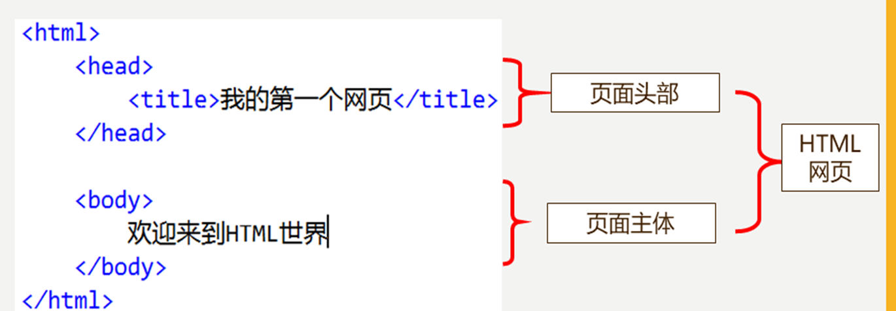

第一章 HTML的使用
1、HTML HyperText Markup Languag
超文本标记语言
1. 文本
2. 视频
3. 音频
4. 链接
5. 图片
写给浏览器的语言
2、HTML 历史
- 超文本标记语言（第一版）1993年6月（IETF制定）
- HTML 2.0——1995年11 月
- HTML 3.0——1996年1 月
- HTML 4.0——1997年
- HTML 5.0——2014年10月29日(W3C和WHATWG合作发布)
W3C: World Wide Web Consortium (W3C理事会或万维网联盟)
WHATWG (Web超文本应用技术工作组
3、HTML的组成

- hear 头部
- mate 用于定义编码方式，描述页面内容，关键字
- title 标题，地址栏上面的描述
- body 身体
- HTML标签的主要放置点
- 要显示的页面内容都在此